Editor, motion designer y productor audiovisual. Más de 10 años en televisión, agencias y proyectos internacionales, hoy con IA generativa dentro del flujo.Video editor, motion designer and audiovisual producer. 10+ years across TV, agencies and international projects, now with generative AI in the workflow.
Una selección de piezas recientes. Cada perfil filtra lo que corresponde a ese tipo de trabajo.A selection of recent work. Each profile filters the pieces that fit that kind of role.
Compuse efectos visuales para la segunda temporada de Entrelazados (Disney+), hice motion y animación para spots de Universal y Telemundo, y edité y animé campañas para marcas como Paladini, Pilay y Crucianelli.I composited VFX for season 2 of Entrelazados (Disney+), did motion and animation for Universal and Telemundo spots, and edited and animated campaigns for brands like Paladini, Pilay and Crucianelli.
Resuelvo la pieza completa para redes, estadios, vía pública y TV: idea, edición, motion, diseño y entrega en cada formato.I deliver the full piece for social, stadiums, out-of-home and TV: idea, editing, motion, design and delivery in every format.
Me formé en Comunicación Social (UNR) y hoy integro el equipo de marketing de Nextbyn, donde llevo el video y las piezas multimedia para la comunicación de la empresa, redes y pauta en Meta.Background in Social Communication (UNR). Today I'm part of Nextbyn's marketing team, handling video and multimedia content for the company's communication, social media and Meta ads.
Acá van piezas de campaña y redes para marcas.Below: campaign and social pieces for brands.
Uso IA para probar más ideas y producir más rápido sin bajar la calidad, siempre sobre más de 10 años de edición y postproducción.I use AI to test more ideas and produce faster without lowering quality, built on 10+ years of editing and post-production.
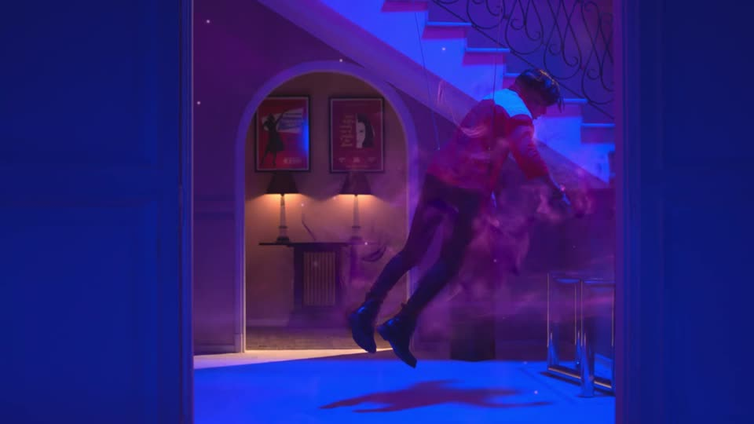
ENTRELAZADOS_T2_VFX.mov · DISNEY+VER ↗WATCH ↗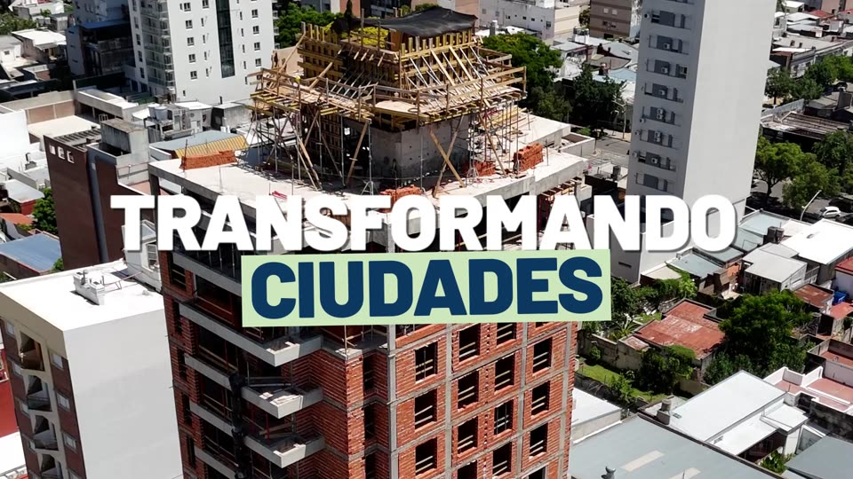
PY_TV_REBRAND_20seg.mp4VER ↗WATCH ↗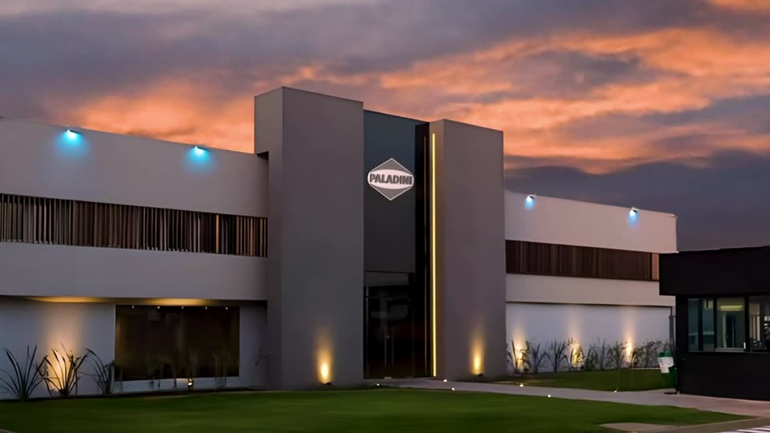
PALADINI_102_ANOS.mp4VER ↗WATCH ↗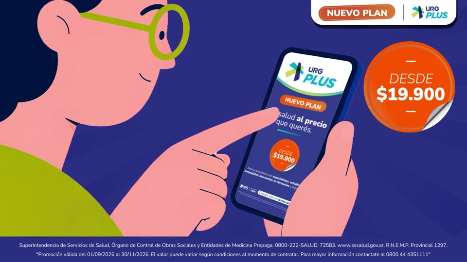
URG_PLUS_SPOT.mp4VER ↗WATCH ↗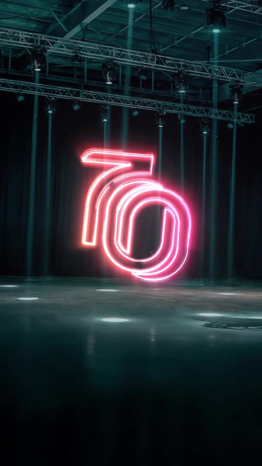
CRUCIANELLI.mp4VER ↗WATCH ↗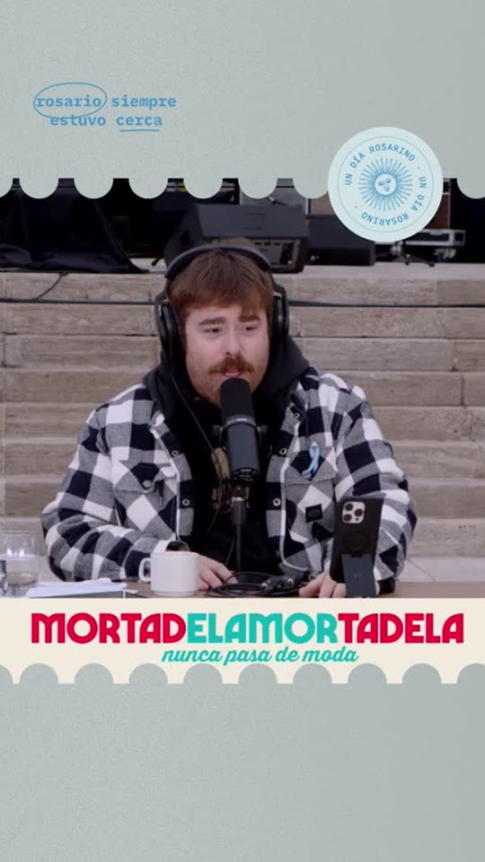
PAL_DIA_ROSARINO.mp4VER ↗WATCH ↗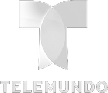
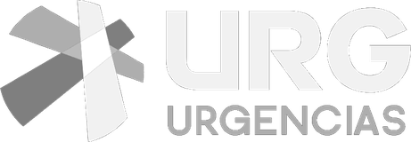
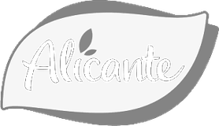
